마법사 계열 통짜 시트
스펙 docs/specs/legacy-class-sheets.md · 마법사 · 화염술사 · 빙결술사 · 뇌전술사 · 대마도사 · 빙결의 군주 · 뇌제 · 2026-10-15
SHEET_ON)는 꺼 둠.
- 7종 기준 그림: 지금 게임 그림을 3배로 찍어 1배 도트로 줄였다. 칸은 96, 발 기준점은 (44, 88)이다. 마력탄·지팡이 빛은 빼고 찍었다.
SHEET_ON에 7종 줄을 넣었다. 모두false이고, 시트가 승인되면 켠다. 주소에?sheets=0을 붙이면 전부 꺼진다.- 동작 키 매핑: 마법사 스킬 자세는 지팡이 기울기
bowA만 줄 때가 있다. 그래서 공용sheetFrame의 cast 조건에bowA를 더했다. cast 줄은key: "bowA"로 프레임을 고른다. - 지팡이 구슬 빛은 시트에 넣지 않는다. 공용
drawHeroSheet가hand점(구슬 가운데)에 코드로 얹는다(sheetStaffGlow). 스킬이 마력을 모으면(pull) 커진다. - 앉기 줄이 없는 기존 직업 시트는 마을·캠프 앉기만 예전 조립식으로 그린다.
- 시트 조립
dev/sheets-mage/build.py: 팔레트 고정, 외곽선 통일, 발 맞춤, hand·head 점을 자동으로 잡는다. guard·hurt·death 는 PixelLab 없이 idle 에서 만든다. - 연결 시험
dev/skills.html?patch=sheets-mage: 기준 그림 한 장으로 만든 시험 시트를 끼워 게임에서 돌린다. 시험 시트는src/sprites에 넣지 않았다.
▣ 디자인 시안 — 그림체 B(3등신) · 키 46px (2026-10-16, ComfyUI 16장 · PixelLab 0) · 사용자 검사 대기
design.py 와 같다(dev/sheets-mage/design.py). 지금 스프라이트의 머리는 두고 목 아래만 세로로 1.5배 늘린 밑그림을 ComfyUI Z-Image + 픽셀 LoRA 로 denoise 0.82 다시 그렸다. 1024px 를 키 46px 로 줄였다(칸마다 최빈색, 20색 안팎, 외곽선 #0b0d14).
뇌전술사는 확정된 시안 B 머리를 밑그림으로 썼다. 프롬프트는 브리프대로 소매(팔뚝)·다리가 보이는 옷이다. 지팡이도 같이 그렸지만, 시트에서는 손목에 덧그린다.
대표 그림 — 지금 게임(키 35)과 새 시안(키 46), 같은 배율 4배, 빨간 줄 = 땅
| 직업 | 대표 | 잘된 점 | PixelLab 정리 때 고칠 점 |
|---|---|---|---|
| 마법사 | 51 | 옆모습, 끝이 꺾인 큰 원뿔 모자, 허리띠·주머니, 나무 지팡이 | 로브가 길어 다리가 덜 보임 → 무릎 위로 줄이고 바지·부츠 보이게 |
| 화염술사 | 37 | 뒤로 길게 날리는 주황 머리, 맨팔·토시, 허리 띠, 불꽃 갈래 지팡이 (23 은 몸이 더 우람한 대안) | 얼굴 또렷하게 |
| 빙결술사 | 51 | 둥근 후드, 털 칼라, 짧은 망토, 다리·흰 부츠 보임, 결정 지팡이 | 얼굴이 흐림 → 눈·코 보이게 |
| 뇌전술사 | 37 | 뻗친 금발 + V 뿔 관(시안 B), 금 단추 코트와 꼬리, 옆모습 | 뿔을 조금 키우고 하늘색 번개 모양으로 |
공통: 후보 중 얼굴이 비거나 정면인 것이 많다(16장 중 약 6장). 대표는 옆모습으로 골랐다. 3차 3종(대마도사·빙결의 군주·뇌제)은 2차가 정해진 뒤에 2차 그림을 바탕으로 뽑는다.
후보 전부 (원본 1024 축소 · 키 46 도트)
마법사
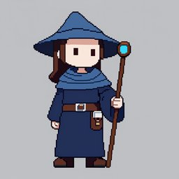
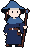
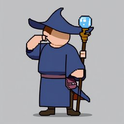
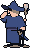
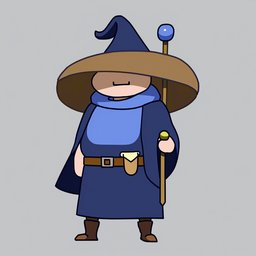
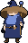
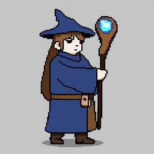
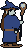
화염술사
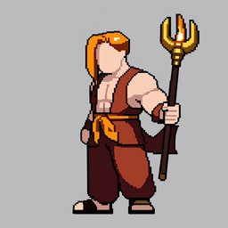
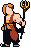
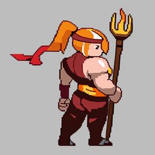
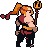
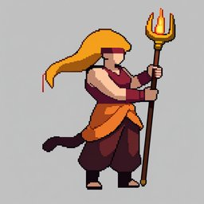
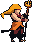
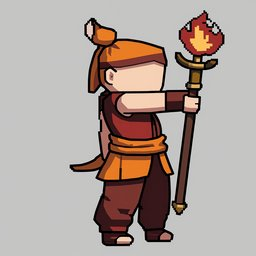
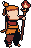
빙결술사
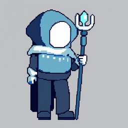
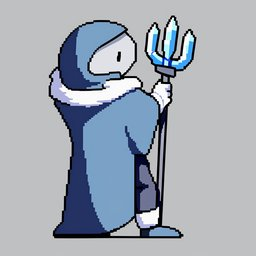
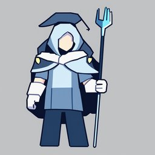
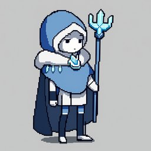
뇌전술사
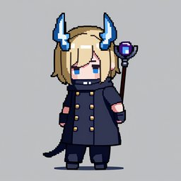
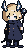
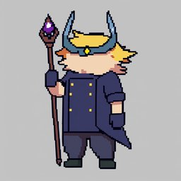
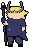
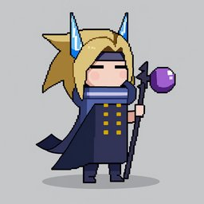
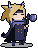
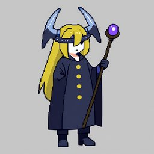
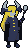
생성 계획서 (로드맵 제출 예정 — 디자인 승인 뒤) · 값 근거: PixelLab API 명세
| 단계 | 엔드포인트 · 크기 | 호출 | usage (근거) |
|---|---|---|---|
| 기준 그림 정리 (대표 시안 → 192칸 깔끔한 도트, 지팡이 뺀 빈손) | edit-image-pixen 192×192 | 직업당 1 | 1 (명세 "Cost 1 generation") |
| 동작 ① 평타A 7 + 평타B 7 + 여분 1 | animate-with-skeleton-v3 192칸 15프레임 | 직업당 1 | 4 (명세: 3f = 2 · 8f = 3 · 15f = 4, 칸 크기 무관 · 검사 실측 8f = 3) |
| 동작 ② 시전 7 + 걷기 8 | 같은 엔드포인트 15프레임 | 직업당 1 | 4 |
| 대기 · guard · hurt · death | — (전투 대기 첫 장 + 코드 숨쉬기·반동·넘어짐) | 0 | 0 |
| 합계 (마법사·화염술사·빙결술사·뇌전술사) | 직업당 3 · 4직업 12 | 직업당 9 · 4직업 36 · 재시도 0 |
- 명세에 "짧게 여러 번보다 긴 한 번"이라고 적혀 있어 동작을 15프레임 두 번으로 묶었다. 각 프레임에 관절을 따로 주므로 동작 사이 이음은 문제없다.
- 실패 시 수리 (다시 뽑지 않음): 깨진 프레임은 이웃 프레임·ComfyUI 인페인트·손 픽셀로 고친다. 떨어진 덩어리·머리-몸 연결은 build 자동 검사로 잡는다. 지팡이는 손목 좌표에 덧그린다(
wpn.py). - 칸: 키 46 + 지팡이(키의 0.75)이면 192칸 관절 설계 기준으로 시트 96칸(발 33·88)에 들어간다.
★ 새 방향 (2026-10-16) — 디자인 새로 그리기 + 관절 지정 애니 · 준비 (GPU·PixelLab 0)
animate-with-skeleton-v3(관절 과장 설계 → 192칸 생성 → 줄임 + 지팡이 덧그리기)로 만든다.
그림체 기준은 검사 계열 시안이 사용자 승인을 받은 뒤에 따른다. 그 전까지 여기서는 ① 디자인 브리프와 ② 동작 관절 설계만 한다.
① 마법사 계열 7종 디자인 브리프
공통 원칙:
29종이 한 그림체다(같은 머리·몸 비율, 외곽선 #0b0d14, 빛은 위·앞).
소매(팔)와 다리가 드러나는 옷을 입힌다. 지난 시도에서 통 로브 덩어리는 PixelLab 이 팔만 조금 움직여 동작이 죽었기 때문이다. 그래서 로브는 무릎 위까지만 두고 넓은 소매에서 팔뚝이 나오게 하며, 바지·부츠를 보인다.
지팡이는 시트에 그리지 않고 손목에 덧그리므로 디자인 그림에서도 손은 비우거나 따로 그린다. 구슬 빛·마력탄은 이펙트 텍스처가 맡는다.
| 직업 | 정체 색 | 머리·모자 (실루엣 1순위) | 옷 (소매·다리 보이게) | 상징 소품 | 계열 안 구분 · 차수 잇기 |
|---|---|---|---|---|---|
| 마법사 (1차·견습 지팡이) | 파랑 · 갈색 · 금 장식 | 챙 넓은 큰 원뿔 모자(끝이 뒤로 꺾임), 갈색 단발 | 무릎 위 파란 튜닉 로브 + 넓은 소매(손목 드러남), 가죽 허리띠·가방, 갈색 바지·부츠 | 허리 두루마리, 짧은 나무 지팡이 + 하늘 구슬 | 계열의 출발점 — "모자 하나"가 실루엣 |
| 화염술사 (2차) | 주황·적·금 | 위로 솟는 불꽃 포니테일 + 이마 띠 | 민소매 조끼(맨팔 + 붉은 토시), 허리에 뒤로 날리는 불꽃 천 띠, 통 넓은 바지 + 샌들 | 불꽃 갈래 지팡이 | 모자 없음 · 맨팔·날리는 띠로 가장 "가벼운" 실루엣 |
| 빙결술사 (2차) | 하늘·흰·남 | 깊은 둥근 후드 + 흰 털 칼라 | 어깨 짧은 망토(팔은 보이게) + 긴 장갑, 어깨 얼음 결정 장식, 슬림 바지 + 털 부츠 | 결정 갈래 지팡이 | 둥근 후드 덩어리 + 털 칼라 |
| 뇌전술사 (2차) | 남·금·하늘 | 시안 B 확정: 뒤로 뻗친 금발 + 남색 관 + V 자 하늘색 번개 뿔 | 짧은 남색 코트(금 단추, 뒤로 갈라진 꼬리 둘), 소매 걷어 팔뚝 드러남, 반장갑, 바지 + 부츠 | 꺾인 갈래 지팡이 | 위로 벌어진 뿔 둘 + 코트 꼬리 — 마법사(원뿔 하나)와 틀부터 다름 |
| 대마도사 (화염 3차) | 검붉은 · 금 · 불꽃 | 불꽃 포니테일 → 쌍뿔 + 포니테일 불꽃 관, 머리 뒤 불꽃 고리 | 검붉은 장포(무릎 아래, 앞트임으로 다리 보임) + 넓은 금 견갑, 팔 토시는 금테 | 겁화의 지팡이 | 화염술사 특징(솟는 머리·띠)을 잇고 견갑으로 어깨가 넓어짐 |
| 빙결의 군주 (빙결 3차) | 흰·하늘·은 | 후드 → 뾰족 얼음 결정 왕관 + 긴 흰 머리 | 털 칼라 → 결정 견갑 + 흰 긴 망토(뒤로), 긴 장갑, 바지 + 털 부츠 | 빙하의 홀 | 둥근 후드 → 뾰족 왕관으로 실루엣이 위로 솟음 |
| 뇌제 (뇌전 3차) | 남·금·흰 | V 뿔 관 → 더 큰 금빛 번개 뿔 관 + 흰 뻗친 머리, 등 뒤 번개 바퀴(살 있는 고리) | 코트 → 금테 남색 망토 + 긴 코트 꼬리, 소매 걷음 | 뇌제의 홀 | 뇌전술사 뿔·코트를 잇고 커짐. 대마도사 고리(불꽃·둥근)와 바퀴(살·번개)로 구분 |
지금 게임 그림(참고): 위 2절 "기준 그림" 탭. 대마도사·뇌제는 지금 둘 다 후광이라 새 디자인에서 고리 모양을 갈라 둔다.
② 동작 관절 설계 — 막대 인형 (검사 세션 skel.py 형식, dev/sheets-mage/skel.py) · 그림체 B · 키 46 비율로 다시 맞춤
2.5등신으로 짠 동작의 모양은 그대로 두고 마디 길이만 3등신 키 46(192칸에서 약 92)으로 늘렸다: 다리 ×2, 몸통 ×1.15, 어깨 ×1.3, 팔 ×1.9, 머리 ×1.8. 지팡이는 키의 0.75(앞 52·뒤 16)로 했다. 발은 x 66 에 둔다(겨눔 때 지팡이가 앞으로 길어서). 평타A 당김 각도는 −125°·−135° 로 세웠다. 모든 프레임이 192칸 안이고 땅 위다.
skel.py 와 같다: 192칸, 발 (96, 176), 얼굴 오른쪽, 관절 13 + 머리 5. 빨강 = 지팡이 든 앞팔·앞다리, 파랑 = 뒷팔·뒷다리, 금색 선 = 덧그릴 지팡이(끝 하늘 점 = 구슬), 회색 = 기준 자세.
크게 과장: 몸통 기울기, 무릎, 발 디딤, 두 팔을 모두 움직인다. 지난 마네킹 애니는 손만 2~12칸 움직였다.
프레임마다 지팡이 각도(덧그리기용)와 cast 키 자세 bowA 를 적었다. 지팡이 끝·물미가 192칸 안이고 땅 아래로 들어가지 않는지는 자동으로 확인했다.
요청 재료는 skel/keys-<동작>.json 이다. first_frame 은 새 기준 그림이 나온 뒤 채운다.
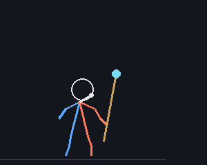
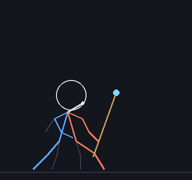
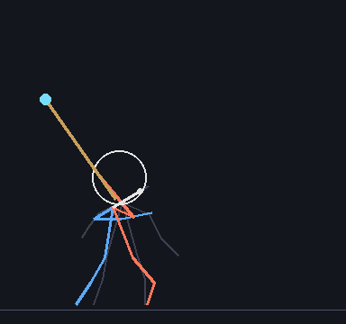
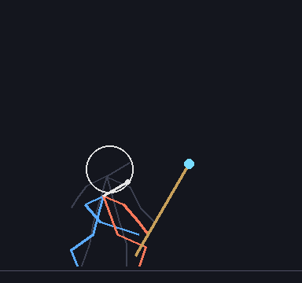
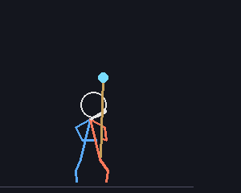
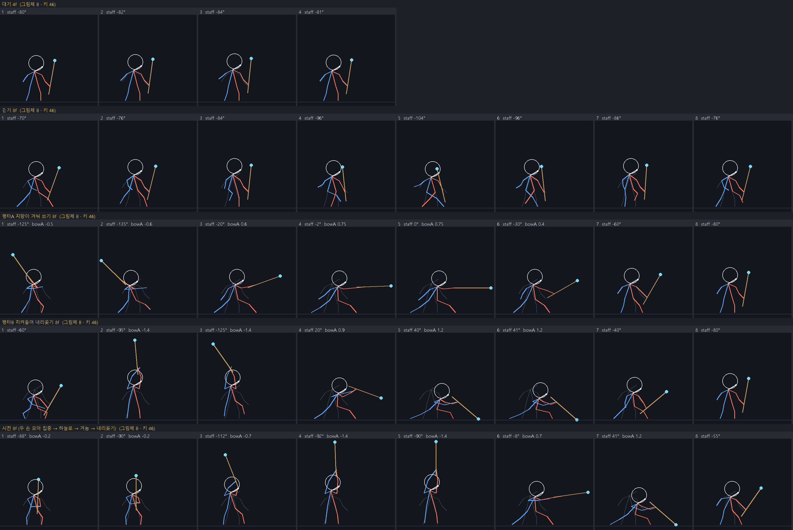
| 동작 | 프레임 | cast 키 자세로 쓰는 프레임 (bowA) | usage 예상 (8f = 3, 15f = 4) |
|---|---|---|---|
| idle | 4 | — | 계열 2차 3종 × 5동작이 기본이다. 1·3차를 2차 동작에 입힐지(편집) 직업마다 새로 뽑을지는 그림체 기준 확정 뒤 계획서로 낸다. |
| walk | 8 | — | |
| atkA | 8 | 당김 −0.5 · −0.6 / 겨눔 0.6 · 0.75 | |
| atkB | 8 | 치켜듦 −1.4 / 내리꽂기 0.9 · 1.2 | |
| cast | 8 | 집중 −0.2 · 들어 올림 −0.7 · 하늘로 −1.4 · 겨눔 0.7 · 내리꽂기 1.2 (스킬 자세 5키를 한 줄에) |
0. 결과 — 7종 시트 (PixelLab usage 7 · ComfyUI 0장) · 검수 품질 미달, 보류 (스위치 꺼 둠)
dev/sheets-mage/pipeline.py). 머리는 직업 그림에서 옮기고, 지팡이는 공용 wpn.py 로 덧그렸다. 뇌전술사는 시안 B 머리다.
cast 키 자세 5장은 지팡이 각도로 골랐다. 시트는 src/sprites/<직업>.png·json 에 넣었다.
- 원형 애니가 "이펙트 없이"라고 해도 구슬에서 빛줄기·흰 덩어리를 그렸다. 다시 뽑지 않고 고쳤다: 몸과 떨어진 덩어리는 버리고, 몸에 붙은 빛줄기는 구슬색으로 잡혀 덧그리기 때 지워진다. 지팡이를 통째로 빛줄기로 바꾼 프레임은 손에서 빛줄기 방향으로 직업 지팡이를 세운다.
- cast 에 "머리 뒤로 젖혀 든" 자세는 없었다. bowA −1.4 키는 머리 위로 세운 자세로 대신한다.
- 게임 스위치:
SHEET_ON마법사 7종은 false 그대로다. 공유 코드를 켜는 것은 사용자 확인 뒤에 한다. 아래 링크는 시험 패치로 그 페이지 안에서만 켠다.
7종이 같이 움직이는 모습 (idle → walk → atkA → atkB → cast 키 5장 → hurt → death, 3배)
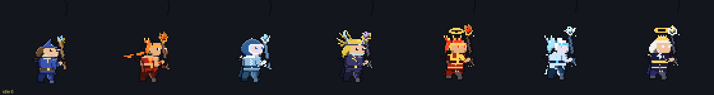
한 줄이 한 직업이다. 칸은 idle · walk 3장 · atkA 2장 · atkB 2장 · cast 5장(bowA −1.4 · −0.7 · −0.2 · 0.7 · 1.2) · hurt · death 끝이다.
게임 안 전후 (dev/skills.html 평타 모드, 같은 순간 — 왼쪽 조립식, 오른쪽 시트)
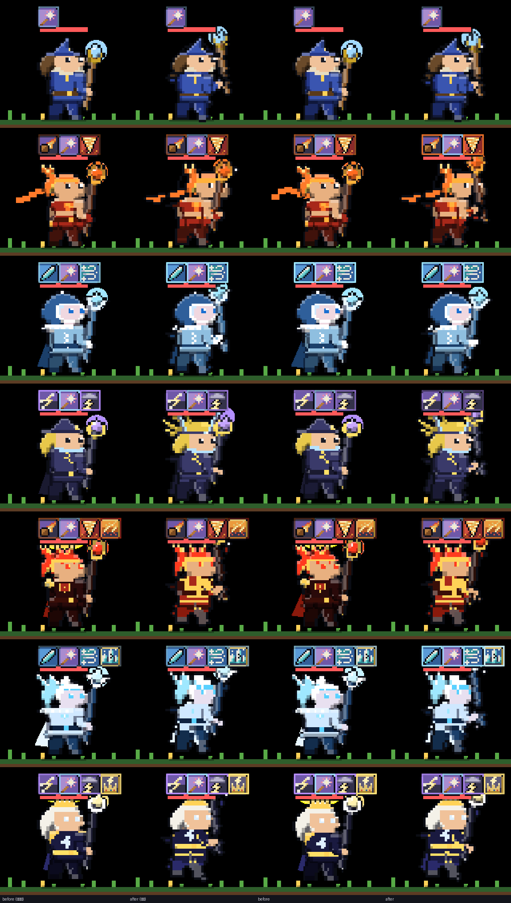
로드맵 검수 지적과 처리 (2026-10-16)
| 지적 | 원인 | 처리 (0회) |
|---|---|---|
| ① 머리 위 떨어진 검은 호 (대기·피격·사망) | 애니가 그린 구슬 빛줄기의 외곽선 조각, 마네킹 민머리 외곽선 | ✅ 몸 부위에 닿은 외곽선만 그린다. 시트 조립에 자동 검사: 떨어진 덩어리 40칸 미만은 지운다(기준 그림의 후광·자락 크기는 허용) |
| ② atkB 첫 장 머리가 위로 뜸 | 애니가 그린 흰 덩어리가 머리색으로 잡혀 마네킹 머리로 쓰임 | ✅ 마네킹 머리 = 몸통에 닿은 머리색 덩어리. 자동 검사: 옮긴 머리가 몸 2칸 안에 닿지 않으면(머리-몸 연결) 그 프레임을 이웃 프레임으로 바꾼다. 떨어진 큰 덩어리(40칸 이상)도 같은 처리 |
| ③ 얼굴이 마네킹 민머리 덩어리 | 머리 기준점이 틀린 프레임에서 직업 머리가 비켜 앉고 마네킹 머리 외곽선이 남음 | △ ①② 수정으로 직업 머리가 제자리에 붙는다. 머리를 통째로 옮기는 방식이라 고개 돌림·표정은 없다 |
| ④ 몸·팔 움직임이 작고 지팡이만 돈다 | 아래 몸 움직임 검사 — 원형 애니 자체가 그렇다 | ❌ 방식 재검토 대상 (아래) |
몸 움직임 검사 — 덧그리기 전 원형 프레임에서 지팡이 칸(회색)을 뺀 몸 (motion_check.py)
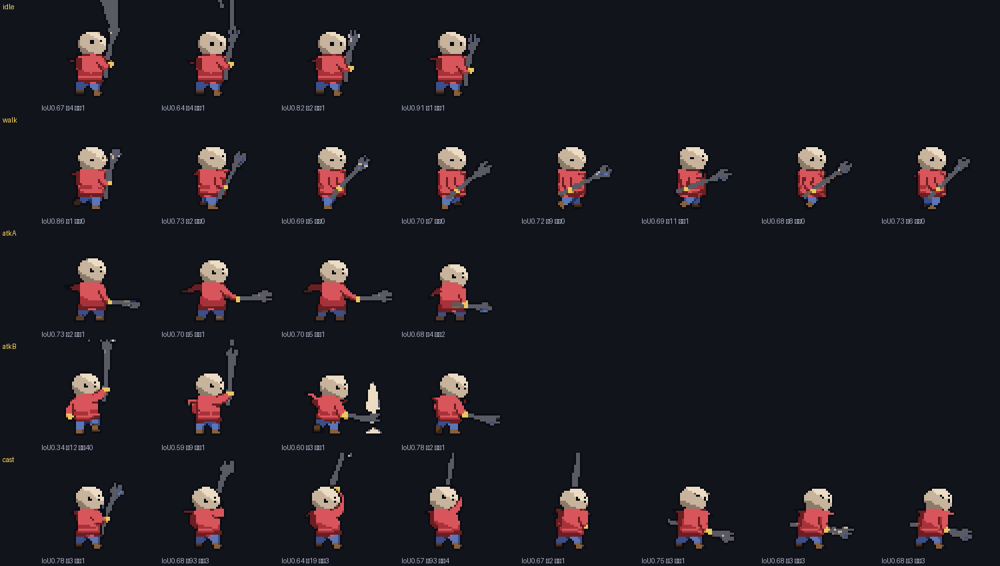
- 칸 아래 숫자: 첫 프레임 대비 몸 실루엣 겹침(IoU) · 손 이동 · 머리 이동 (칸). 손이 안 잡힌 프레임은 손 이동이 크게 나온다(cast 1·3).
- 손(금색 장갑)만 움직인다: 평타 앞으로 2~5칸, 치켜들기 위로 9~12칸. 몸통 덩어리는 그대로(겹침 0.6~0.9), 머리 0~4칸, 걷기에서 다리가 거의 엇갈리지 않는다.
- 추정: 마네킹이 팔·다리가 드러나지 않는 통 로브 덩어리라 PixelLab 이 팔만 조금 들고 몸을 그대로 두었다. 다음 방식은 소매(팔)와 다리가 따로 보이는 원형, 또는 스켈레톤·큰 해상도(검사 세션 조사 중)가 필요해 보인다.
원형 마네킹 애니 원본 (PixelLab, 첫 칸 = 넣은 첫 프레임)
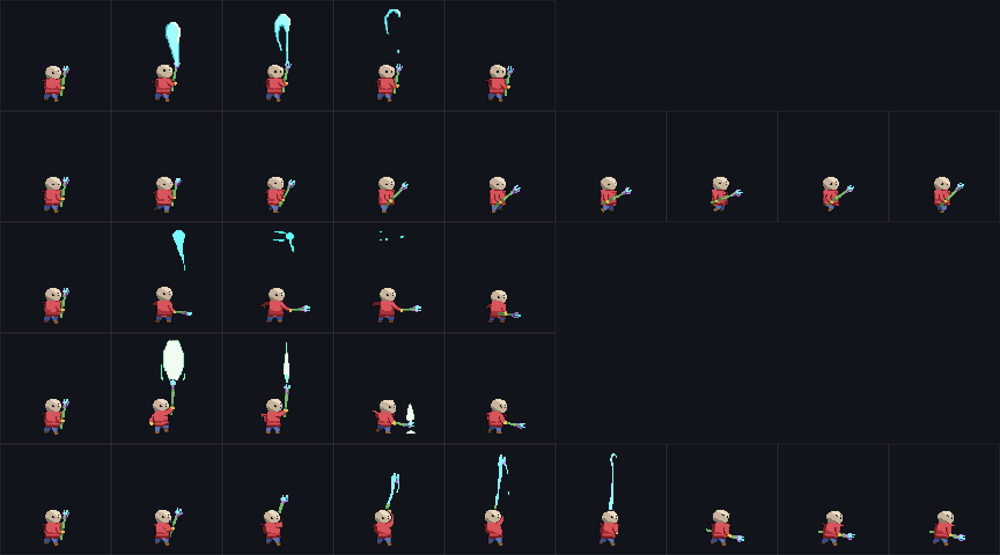
1. 칸 크기와 발 기준점
| 직업 | 무기 | 칸 | 발 기준점 (x, y) | 지금 리그 최대 범위 (발 기준, 도트) | 여백 (앞 · 뒤 · 위) |
|---|---|---|---|---|---|
| 마법사 | 견습 지팡이 | 96×96 | (44, 88) | x −16 ~ +41 · y −50 ~ +3 | 10 · 28 · 38 |
| 화염술사 | 화염 지팡이 | 96×96 | (44, 88) | x −23 ~ +45 · y −51 ~ +4 | 6 · 21 · 37 |
| 빙결술사 | 서리 지팡이 | 96×96 | (44, 88) | x −13 ~ +45 · y −38 ~ +4 | 6 · 31 · 50 |
| 뇌전술사 | 뇌전 지팡이 | 96×96 | (44, 88) | x −19 ~ +44 · y −55 ~ +4 | 7 · 25 · 33 |
| 대마도사 | 겁화의 지팡이 | 96×96 | (44, 88) | x −22 ~ +47 · y −54 ~ +5 | 4 · 22 · 34 |
| 빙결의 군주 | 빙하의 홀 | 96×96 | (44, 88) | x −16 ~ +47 · y −42 ~ +5 | 4 · 28 · 46 |
| 뇌제 | 뇌제의 홀 | 96×96 | (44, 88) | x −19 ~ +45 · y −59 ~ +5 | 6 · 25 · 29 |
측정: 기사 리그를 1도트 = 1px 로 그려 불투명 범위를 쟀다. 전투 대기, 평타 2종 전 구간(0.05 간격), 스킬 자세(bowA −1.6 ~ 1.2)를 모두 넣었다. 앞쪽 최대값에는 평타 섬광도 들어 있다. 견습 지팡이도 96 칸이다. 스펙 표는 견습 지팡이를 64 칸에 두지만, 평타 때 지팡이 끝이 발에서 앞으로 41칸까지 나간다. 64 칸(발 x 32)이면 앞이 31칸이라 잘린다. 그래서 정할 것 ①에 올렸다. 발 x 를 칸 가운데(48)보다 4칸 뒤에 둔 것은 3차 홀이 앞으로 47칸까지 나가서다.
SHEET_ON 을 켜서 그린 것이다. 윗줄은 오른쪽 보기, 아랫줄은 왼쪽 보기다.
7종 모두 가장 잘 맞는 이동량이 좌우 양쪽에서 (0, 0)이고, 조립식의 불투명 칸을 100% 덮는다. 시트 쪽은 바깥 외곽선 1칸이 더 둘러진다(스펙 "외곽선 #0b0d14 통일").

2. 기준 그림 (지금 게임 그대로, 칸·발 기준점 표시)
빨간 줄은 발 기준점(땅)이고 회색 테두리는 칸 끝이다. 기준 그림은 전투 대기 판이다. 컷 모드라 도트가 깔끔하다(색 39~69개). 대기 판은 구슬 빛 번짐이 섞여 색이 60~140개다. 흑백·실루엣은 같은 계열 구분을 보려고 넣었다. 지금 그림에서도 마법사와 뇌전술사는 둘 다 뾰족 모자라 실루엣이 비슷하다. 다만 뇌전술사는 금발 긴 머리가 다르다. 시트 생성 때 직업 입히기에서 더 벌릴지 정할 것 ③.
3. 동작 키 매핑 (게임 상태 → 시트 줄)
| 줄 | 게임에서 언제 | 프레임 고르는 법 (src/sprites.js sheetFrame) | 만드는 법 (계획 — 승인 전) |
|---|---|---|---|
idle | 캠프·마을 서 있기 (mode stand/idle) | fps 6 반복 | 원형 애니 (PixelLab, 승인 시) |
guard | 교전 중 평타 사이 | fps 6 반복 | idle 재사용, 윗몸 1칸 낮춤 (build.py) |
walk | 원정 이동·결투 접근 | walkT × fps 10 | 원형 애니 — 로브 체형 7종 공유 |
atkA · atkB | 평타 (knight.combo 홀짝) | hit 프레임이 원거리 타격 시점 45% 에 오게 | 앞으로 겨눠 쏘기 / 치켜들었다 내리꽂기 |
cast | 스킬 자세 전부 (pose.bowA·pull) | key: "bowA", val 이 가장 가까운 프레임 — 아래 다섯 키 자세 | 원형 cast 애니 8장에서 다섯 장을 고른다 |
hurt | 맞아서 밀림 (recoil > 0.35) | recoil 크기로 0/1 | idle 1장을 뒤로 2·1칸 + 코드 흰 번쩍임 |
death | 체력 0 (down) | 한 번, 마지막 유지 | hurt 1장을 발끝 축으로 0·25·50·75·90° 넘어뜨림 |
sit | 마을·캠프 앉기 | 줄이 없으면 예전 조립식 앉기 | 기존 앉기 유지 (PixelLab 0) |
cast 다섯 키 자세 — 실제 스킬 자세의 bowA 분포로 정함
| bowA | 자세 | 스킬 시전 중 차지 비율 (7종 × 스킬 × ★0~3, 88회 · 60fps 표본) |
|---|---|---|
| −1.4 | 지팡이를 머리 위로 치켜듦 (메테오·뇌우·궁극기 모으기) | 16% (−1.6 ~ −1.2) |
| −0.7 | 비스듬히 들어 마력을 모음 | 4% (−1.0 ~ −0.6) |
| −0.2 | 세워 들고 집중 (회오리·블리자드 유지) | 42% (−0.4 ~ 0.0) |
| 0.7 | 앞으로 겨눔 (발사 순간) | 22% (0.2 ~ 0.8) |
| 1.2 | 앞 땅에 내리꽂음 (마력 폭발 ★★·궁극기 마무리) | 6% (1.0 ~ 1.2) |
- 몸 이동·띄움·기울임(dx·lift·skew·sx·sy)은 지금처럼 시트 그림 전체에 변형으로 준다.
- 마력탄이 나가는 자리는 시트의
hand점(구슬 가운데)이다.heroMuzzle이 이 점을 쓴다. 구슬 빛(sheetStaffGlow)도 같은 점에 그린다. - 스킬 잔상
onlyWeapon은 시트에선 아무것도 안 그린다. 무기가 그림 안에 있어서다(파이터와 같음).

3-1. 지팡이 원형 마네킹 · 직업 입히기 시안 (정지 그림, PixelLab 0회 · ComfyUI 0장)
2026-10-16 사용자 승인: 뇌전술사 시안 B 확정 · 3차는 2차 시트 편집 · 무기는 공용 "덧그리기". 아래 입힌 결과는 지팡이를 덧그리기로 바꾸고 뇌전술사를 시안 B 머리로 입힌 판이다.
- 마네킹(왼쪽 첫 칸): 견습 마법사 몸에서 모자·머리카락을 빼고 민머리에 눈만 남겼다. 부위마다 다른 색 3단으로 칠했다. 부위는 머리, 몸통(빨강), 바지(파랑), 신발(갈색), 손(금색), 지팡이 자루(초록)·갈래(보라)·구슬(청록)이다. PixelLab 애니가 이 색을 지키면 프레임마다 부위를 색으로 다시 가를 수 있다.
- 입히기 (
dev/sheets-mage/mannequin.py dress):- 머리(모자·머리카락·관·후광)는 직업 그림에서 통째로 옮겨 마네킹 머리 아랫줄 가운데에 맞춘다. 지팡이에 닿은 외곽선은 빼고 옮긴다.
- 몸은 같은 자리 직업 색으로 칠하고, 없으면 직업 부위 3단 색으로 칠한다.
- 지팡이 덧그리기 (공용 모듈
dev/sheets-common/wpn.py): 직업 지팡이 그림을 떼어 낸다. 지팡이 색만 바꿔 같은 자세로 찍은 캡처와의 차이로 뗀다. 이 그림을 마네킹 지팡이 칸의 손 점·끝 방향에 RotSprite 로 돌려 얹고, 쥔 손은 그 위에 다시 그린다. 그래서 화염 갈래·서리 결정·뇌전 꺾인 갈래·3차 홀 모양이 그대로 남는다. - 마네킹 밖의 망토·목도리 자락은 몸통과 같은 이동량으로 옮긴다.
- 지팡이 부위 가르기: 지팡이 색만 자루 #ff00ff·갈래 #00ff00·구슬 #00ffff 로 바꿔 한 번 더 찍었다. 두 장의 차이로 칸을 정확히 갈랐다(손이 쥔 자리도).
- 2차·견습은 잘 이어진다: 마법사·화염술사·빙결술사·뇌전술사는 원래 그림과 거의 같다(목도리 자락 포함). 몸 비율이 마네킹과 같아서다.
- 3차는 몸이 5칸 더 크다(키 40 · 2차 35). 그래서 견습 몸 마네킹에 입히면 대마도사·빙결의 군주의 옷 무늬가 어긋난다. → 결정: 3차는 2차 시트 편집으로 만든다. 키 차이로 깨지면 그때 3차용 큰 마네킹 계획서를 낸다.
- 정지 그림은 마네킹과 직업이 같은 자세라 쉽다. 실제 시험은 PixelLab 원형 애니(팔·지팡이가 움직인 프레임)에 입혀 보는 것이다. 검사 계열 시범 결과로 방식이 정해지면 계획서를 다시 낸다.
덧그리기 각도 시험 — 마네킹 지팡이만 돌린 가짜 프레임 (치켜듦 −150° / 기본 −79° / 앞으로 겨눔 −10° / 내리꽂기 40°)
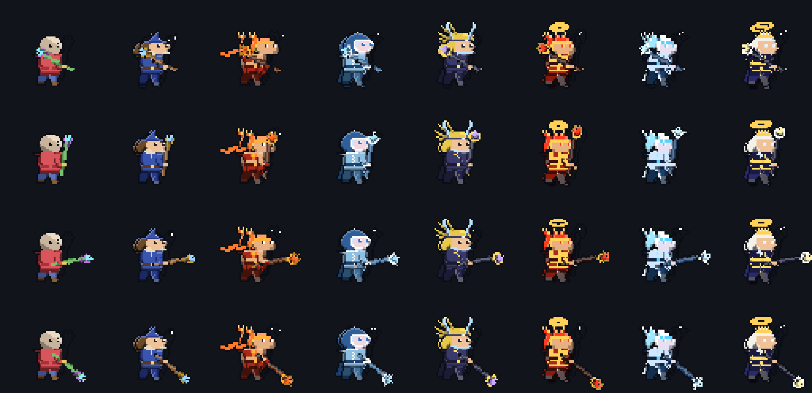
팔 자세는 그대로 두고 지팡이만 돌린 시험이라 팔이 어색한 것은 정상이다. 실제로는 원형 애니가 팔과 지팡이를 같이 움직인다. 7종 모두 직업 지팡이가 손 점을 축으로 끝 방향을 따라간다. 1px 자루도 끊기지 않는다.
뇌전술사 실루엣 바꾸기 시안 B — 모자 대신 뻗친 머리 + 뿔 장식 관 (사용자 결정 ③)
- 모자를 지우고 금발을 뒤로 뻗친 다발로 바꿨다. 이마에는 남색 관과 앞쪽 하늘색 보석을 넣고, 관 양끝에서 V 자로 벌어지는 하늘색 번개 뿔 둘을 세웠다. 코드로 그린 손도트 시안이다(
electro_head). - 실루엣: 마법사는 뾰족 모자 하나, 시안 B 는 위로 벌어진 뿔 둘에 뒤로 뻗친 머리다. 흑백·실루엣에서 바로 갈린다. 화염술사(뒤통수 불꽃 다발 + 목도리)와도 틀이 다르다.
- 3차 뇌제는 지금 흰 머리에 금관·후광이다. 시안 B 를 따르면 "뿔 관 → 더 큰 금빛 뿔 관 + 후광"으로 이어진다(3차 편집 때 반영).
4. 생성 계획 (로드맵 세션 제출, 보류)
| 단계 | PixelLab | 내용 |
|---|---|---|
| 원형 (지팡이 마네킹) | 보류 — 검사 시범 뒤 계획서 | idle · walk · atkA · atkB · cast. 사용량 기준: 8프레임 = usage 2, 4프레임 = usage 1 (로드맵 2026-10-16) |
| 나머지 6종 | 0 목표 | 원형 프레임 위에 ComfyUI 로 직업 입히기 (검사 계열 시범 결과를 따름) → 안 되면 직업당 기준 편집 1 + 5동작, 다시 계획서 |
| 합계 | 예상 5 ~ 7, 최대 41 (상한 90) | 지금까지 0회 · 래퍼 dev/sheets-mage/plx.py(응답 usage 합계, 상한 90, 잔량 300 바닥) |
5. 확인 링크
시트 켬 (시험 패치 — 그 페이지 안에서만 SHEET_ON 을 켠다): 마법사 · 화염술사 · 빙결술사 · 뇌전술사 · 대마도사 · 빙결의 군주 · 뇌제 · 스킬: 화염술사 메테오 ★★★
지금 조립식 그대로: 화염술사 평타 (sheets=0) ·
콘솔 sheetsMage.diff('pyromancer') = 같은 자세를 조립식·시트로 그려 다른 칸 수
6. 수용 기준 (이번 준비 단계)
| 기준 | 상태 |
|---|---|
| 계열 7종 시트로 그려지고 동작이 움직인다 | ✅ 7종 · idle·guard·walk·atkA·atkB·cast(5 키 자세)·hurt·death 가 움직인다 (0절 GIF). 앉기는 조립식 유지(결정). 게임 스위치는 끔 — 켤지 정할 것 |
| 어떤 동작에서도 무기 끝이 칸에서 잘리지 않는다 | ✅ 7종 시트 전 프레임이 칸 가장자리에 닿지 않는다 (자동 검사 — 사망 넘어짐은 칸 안으로 밀어 고침) |
| 기존 그림과 그림체가 이어지고 2차·3차가 흑백 실루엣으로 구분된다 | ✅ 머리·지팡이·옷 색이 기존 그대로 이어지고(0절 게임 전후), 흑백 몽타주에서 7종이 갈린다. △ 3차는 키 40 몸이 견습 마네킹(35)에 맞춰 조금 작아졌다 — 3차 큰 마네킹은 필요하면 계획서 |
| 스킬 시전·궁극기·결투·레이드·마을이 깨지지 않는다. 전 직업 시전 예외 0 | ✅ 진짜 시트를 켠 채 7종 × 스킬 × ★0~3 = 88회 시전(궁극기 포함), 평타 각 5초 → 예외 0. 오프라인 원정 걷기·캠프 앉기(조립식) 확인. △ 결투·레이드는 같은 drawHero 경로라 따로 찍지 않음 |
SHEET_ON 을 끄면 예전 조립식 | ✅ 7종 줄 false. 시트가 없으면 켜도 조립식(heroSheetOn), ?sheets=0 이면 전부 끔 |
| fps 가 떨어지지 않는다 | ✅ 4명 × 300번 그리기: 조립식 926ms → 시트 13.6ms (진짜 시트, 구슬 빛 포함) |
| PixelLab 사용량 기록 | ✅ 응답 usage 합계 7 (승인 7, 재시도 0) — dev/sheets-mage/usage.md. ComfyUI 0장 |
7. 정할 것
- 견습 지팡이(마법사)도 96 칸 → 확정 (2026-10-15 사용자).
- sit 는 기존 조립식 앉기 유지 → 확정 (2026-10-15 사용자).
- 뇌전술사 실루엣 → 시안 B 확정 (2026-10-16 사용자).
- 3차 → 2차 시트 편집, 깨지면 그때 큰 마네킹 계획서 (2026-10-16 사용자).
- 마법사 계열 시트 켜기 → 보류 (로드맵 검수 품질 미달, 방식 재검토 중 — 2026-10-16). 스위치는 꺼 둠.